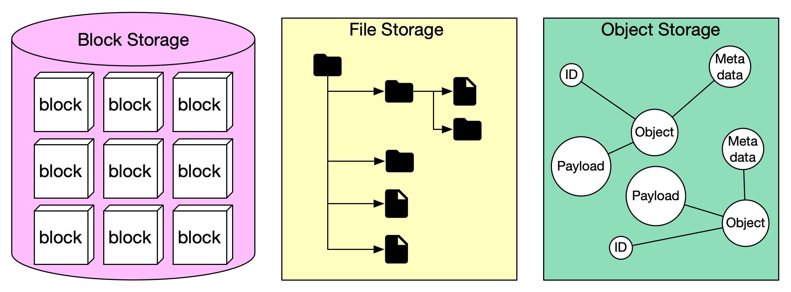

Let’s review the storage systems in general.
Storage systems fall into three broad categories:
The diagram above illustrates the comparison of different storage systems.
Block storage came first, in the 1960s. Common storage devices like hard disk drives (HDD) and solid-state drives (SSD) that are physically attached to servers are all considered as block storage.
Block storage presents the raw blocks to the server as a volume. This is the most flexible and versatile form of storage. The server can format the raw blocks and use them as a file system, or it can hand control of those blocks to an application. Some applications like a database or a virtual machine engine manage these blocks directly in order to squeeze every drop of performance out of them.
Block storage is not limited to physically attached storage. Block storage could be connected to a server over a high-speed network or over industry-standard connectivity protocols like Fibre Channel (FC) and iSCSI. Conceptually, the network-attached block storage still presents raw blocks. To the servers, it works the same as physically attached block storage. Whether to a network or physically attached, block storage is fully owned by a single server. It is not a shared resource.
File storage is built on top of block storage. It provides a higher-level abstraction to make it easier to handle files and directories. Data is stored as files under a hierarchical directory structure. File storage is the most common general-purpose storage solution. File storage could be made accessible by a large number of servers using common file-level network protocols like SMB/CIFS and NFS. The servers accessing file storage do not need to deal with the complexity of managing the blocks, formatting volume, etc. The simplicity of file storage makes it a great solution for sharing a large number of files and folders within an organization.
Object storage is new. It makes a very deliberate tradeoff to sacrifice performance for high durability, vast scale, and low cost. It targets relatively “cold” data and is mainly used for archival and backup. Object storage stores all data as objects in a flat structure. There is no hierarchical directory structure. Data access is normally provided via a RESTful API. It is relatively slow compared to other storage types. Most public cloud service providers have an object storage offering, such as AWS S3, Google block storage, and Azure blob storage.